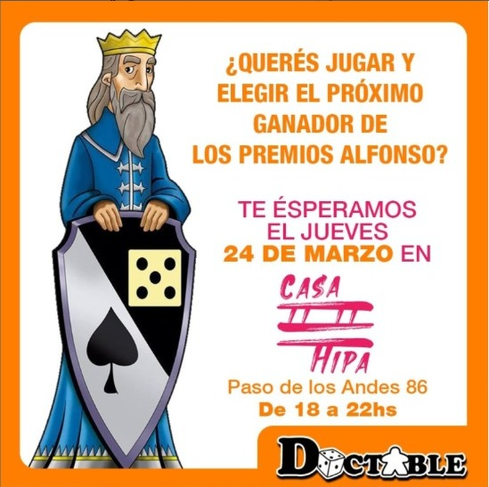

Noticias

Ludoteca
SINOPSISPreparaos para hacer espacio en la mesa más grande que tengáis en vuestra casa, porque este juego es inmenso. Basado en el videojuego homónimo, este juego de mesa consigue reproducir de forma muy interesante el gameplay original. ¿Recordáis esas partidas eternas con los primeros Civilization de PC? Pues bien, este juego no se queda muy atrás. Con un tiempo de juego de 2 a 4 horas, estamos ante un juego para jugadores experimentados. Hay muchas cosas a controlar y a tener en cuenta y, aunque pasados los primeros turnos el sistema de juego se va volviendo más claro y fácil de entender, se requieren unas cuantas partidas para entender hasta qué punto es mejor una estrategia frente a otra, en pos de la victoria final.
SINOPSIS ¿Que nos propone 7 Wonders? Pues nada mas y nada menos que ponernos al mando de una de las siete civilizaciones que contruyeron alguna de las siete maravillas del mundo antiguo: los Jardines Colgantes de Babilonia, el Coloso de Rodas, el Templo de Artemisa, el Mausoleo de Halicarnaso, el Faro de Alejandría y la Gran Pirámide de Guiza (la unica maravilla que se mantiene en pie hoy en día). Desde nuestro puesto iremos tomando decisiones que nos hagan prosperar lo suficiente como para construir esa maravilla por la cual nuestra civilización será recordada en los libros de historia. Se encuentra publicado en España de la mano de Asmodee (que como es habitual, realiza una localización justita, traduciendo únicamente las normas, dejando las cartas con los nombres en inglés). Es un juego de 2 a 7 personas (gran abanico de posibilidades), con una duración media por partida de una media hora.

{kind=link}
{kind=link}
{kind=link}